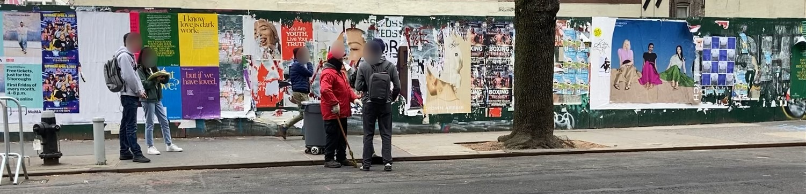

Social Signaling in Urban Public Human-Robot Interaction
What people do when a trash barrel rolls up to them in a New York City plaza, recorded from the barrel's point of view.
The dataset
SSUP-HRI captures human-robot interaction in urban public settings. We deployed two mobile trash barrel robots in public plazas in New York City and recorded what happened around them. The footage carries social signals that can be analyzed for insight into naturalistic HRI.
To our knowledge, this is the first dataset showing robot deployments in completely public, non-controlled settings with urban residents.
- Footage
- About 25 hours
- Annotated interactions
- Over 800
- Format
- 360° video and audio, robot's point of view
- Sites
- Two plazas in New York City
- Sessions
- Ten, one to two hours each
- Access
- On request, for research use
Sample clips
Deployments
Each line below is one recording session. More deployments will be added here as they are released.
The robot
Each robot is an ordinary trash barrel on a dolly, driven by a recycled hoverboard. The metal chassis holds up on outdoor plaza paving. A researcher steers the robot remotely, so its behavior looks autonomous to people nearby.
- Camera Insta360 One R with built-in microphones, mounted on the barrel rim
- Drive Recycled hoverboard motors under a dolly
- Computer Raspberry Pi 4, Ubuntu 20.04 Server, ROS 1 Noetic
The base is open hardware. Build instructions, the bill of materials and software are documented at the Mobile Hoverboard Robot Base site.
Request access
We are happy to share the data with interaction researchers. The videos are unaltered and include people's faces and voices, so access goes through a data use agreement.
- Get IRB approval, or the equivalent at your institution, for secondary use of the data.
- Sign the data use agreement and email it to Frank Bu, with your IRB protocol if you have one and a short description of the analyses you plan.
What you agree to
- Research use only, no commercial use
- Secure storage of the data
- Credit the dataset and its funding sources in publications
- No sharing with anyone who has not signed the agreement
- Tell the research team before starting new analyses
This is a summary. The agreement itself is the binding text. The data is free of charge and provided as is.
Related publications
- Trash in Motion: Emergent Interactions with a Robotic TrashcanBarry Brown et al. Proceedings of the CHI Conference on Human Factors in Computing Systems, 2024.
- Field Notes on Deploying Research Robots in Public SpacesFanjun Bu et al. Extended Abstracts of the CHI Conference on Human Factors in Computing Systems, 2024.
- Trash Barrel Robots in the CityFanjun Bu et al. Companion of the ACM/IEEE International Conference on Human-Robot Interaction, 2023.
